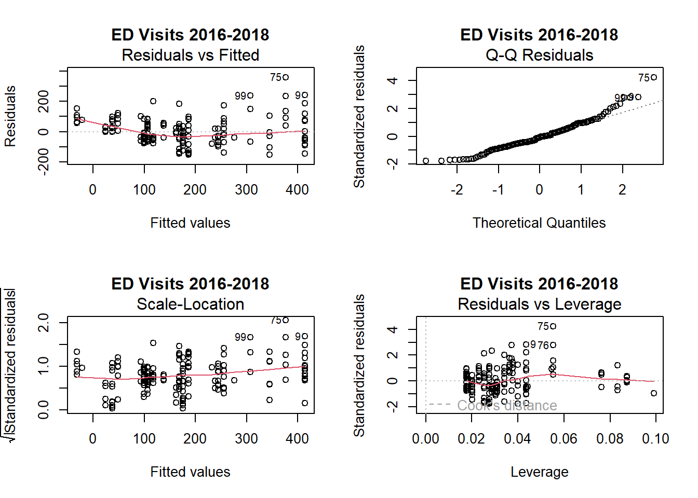

# Load libraries
library(tidyverse)## ── Attaching core tidyverse packages ──────────────────────── tidyverse 2.0.0 ──
## ✔ dplyr 1.1.4 ✔ readr 2.1.5
## ✔ forcats 1.0.0 ✔ stringr 1.5.1
## ✔ ggplot2 3.5.1 ✔ tibble 3.2.1
## ✔ lubridate 1.9.3 ✔ tidyr 1.3.1
## ✔ purrr 1.0.2
## ── Conflicts ────────────────────────────────────────── tidyverse_conflicts() ──
## ✖ dplyr::filter() masks stats::filter()
## ✖ dplyr::lag() masks stats::lag()
## ℹ Use the conflicted package (<http://conflicted.r-lib.org/>) to force all conflicts to become errorslibrary(broom)
library(patchwork)
# Read full data
full_data2 = read_csv("data/NYC_total.csv")## Rows: 634 Columns: 10
## ── Column specification ────────────────────────────────────────────────────────
## Delimiter: ","
## chr (3): data_years, borough, indicator
## dbl (7): zip_code, zip_code_rate, avg_temperature, pm2.5_level, acres_sum, h...
##
## ℹ Use `spec()` to retrieve the full column specification for this data.
## ℹ Specify the column types or set `show_col_types = FALSE` to quiet this message.# Data ED Visits (2016-2018)
full_data2_ed_1 = full_data2 |>
mutate(hvi = as.numeric(hvi)) |>
filter(indicator == "ed_visits_rate") |>
filter(data_years == "2016-2018")
## Datasets for Graphing (datasets 1 & 2):
## Changing HVI to numeric
# Data ED Visits (2019-2021)
full_data2_ed_2 = full_data2 |>
mutate(hvi = as.numeric(hvi)) |>
filter(indicator == "ed_visits_rate") |>
filter(data_years == "2019-2021")
# Data Hospitalizations (2016-2018)
full_data2_hosp_1 = full_data2 |>
mutate(hvi = as.numeric(hvi)) |>
filter(indicator == "hosp_rate") |>
filter(data_years == "2016-2018")
# Data Hospitalizations (2019-2021)
full_data2_hosp_2 = full_data2 |>
mutate(hvi = as.numeric(hvi)) |>
filter(indicator == "hosp_rate") |>
filter(data_years == "2019-2021")
## Datasets for Statistical Analysis (datasets 3 & 4):
## Keeping HVI as a factor variable
# Data ED Visits (2016-2018)
full_data2_ed_3 = full_data2 |>
filter(indicator == "ed_visits_rate") |> # filtering only ed_visits
filter(data_years == "2016-2018")
# Data ED Visits (2019-2021)
full_data2_ed_4 = full_data2 |>
filter(indicator == "ed_visits_rate") |> # filtering only ed_visits
filter(data_years == "2019-2021")
# Data Hospitalizations (2016-2018)
full_data2_hosp_3 = full_data2 |>
filter(indicator == "hosp_rate") |> #filtering only hospitlization rate
filter(data_years == "2016-2018")
# Data Hospitalizations (2019-2021)
full_data2_hosp_4 = full_data2 |>
filter(indicator == "hosp_rate") |> #filtering only hospitlization rate
filter(data_years == "2019-2021")rate = how many people visited per 10,000
# Fit linear regression model for ED visits (2016-2018)
# Examining relationship between visit rates and borough/HVI
fit = lm(zip_code_rate ~ borough + hvi, data = full_data2_ed_3)
# Format results table
results_table = tidy(fit) |>
select(-statistic) |>
knitr::kable(digit = 3)During 2016-2018, Queens was the borough that had lowest ED visit rate and zipcode with hvi score 1 had the lowest risk of ED visit. In contrast, Bronx was the borough had the highest ED visit rate and zipcode with hvi score 5 had the highest rate of ED visit.
# Fit linear regression model for ED visits (2019-2021)
# Examining relationship between visit rates and borough/HVI
fit2 = lm(zip_code_rate ~ borough + hvi, data = full_data2_ed_4)
# Format results table
results_table2 = tidy(fit2) |>
select(-statistic) |>
knitr::kable(digit = 3)During 2019-2021, Queens was the borough that had lowest ED visit rate and zipcode with hvi score 1 had the lowest ED visit rate. In contrast, Bronx was the borough had the highest ED visit rate and zipcode with hvi score 5 had the highest rate of ED visit.
# Fit linear regression model for hospitalizations (2016-2018)
fit3 = lm(zip_code_rate ~ borough + hvi, data = full_data2_hosp_3)
# Format results table
results_table3 = tidy(fit3) |>
select(-statistic) |>
knitr::kable(digit = 3)During 2016-2018, Queens was the borough that had lowest hospitalization rate and zipcode with hvi score 1 had the lowest hospitalization rate. In contrast, Bronx was the borough had the highest hospitalization rate and zipcode with hvi score 5 had the highest rate of hospitalization.
# Fit linear regression model for hospitalizations (2019-2021)
fit4 = lm(zip_code_rate ~ borough + hvi, data = full_data2_hosp_4)
results_table4 = tidy(fit4) |>
select(-statistic) |>
knitr::kable(digit = 3)During 2019-2021, Queens was the borough that had lowest hospitalization rate and zipcode with hvi score 1 had the lowest hospitalization rate. In contrast, Bronx was the borough had the highest hospitalization rate and zipcode with hvi score 5 had the highest rate of hospitalization.
Overall, all models shows the borough had the lowest ED and hospitalization rate is Queens and zipcodes having lower HVI score. We can infer that area with lower zip codes tend to have lower rates of ED and Hospitalization for children with respiratory problems.
# Calculate average HVI scores for each borough
# This helps understand overall heat vulnerability patterns across boroughs
daa = full_data2 |>
mutate(hvi = as.numeric(hvi)) |>
group_by(borough) |>
summarise(hvi_mean = mean(hvi))
# Produce table
knitr::kable(daa)| borough | hvi_mean |
|---|---|
| Bronx | 4.070707 |
| Brooklyn | 3.653061 |
| Manhattan | 2.418605 |
| Queens | 3.274419 |
| Staten Island | 2.068182 |
It turns out to be there are other factors that we haven’t take in to account because borough with the lowest hvi mean was Staten Island.
# Create visualization plots showing relationship between HVI scores and health outcomes
# Four plots examine ED visits and hospitalizations across both time periods
plot1 = ggplot(full_data2_ed_1, aes(x = hvi, y = zip_code_rate)) +
geom_point(color = "blue", alpha = 0.6) + # Data points
geom_smooth(method = "lm", color = "red", se = TRUE) + # Regression line with confidence interval
labs(title = "ED Visit rate per HVI score (2016-2018)", x = "HVI", y = "ED Visit Rate") +
theme_minimal()
plot2 = ggplot(full_data2_ed_2, aes(x = hvi, y = zip_code_rate)) +
geom_point(color = "blue", alpha = 0.6) + # Data points
geom_smooth(method = "lm", color = "red", se = TRUE) + # Regression line with confidence interval
labs(title = "ED Visit rate per HVI score (2019-2021)", x = "HVI", y = "ED Visit Rate") +
theme_minimal()
plot3 = ggplot(full_data2_hosp_1, aes(x = hvi, y = zip_code_rate)) +
geom_point(color = "blue", alpha = 0.6) + # Data points
geom_smooth(method = "lm", color = "red", se = TRUE) + # Regression line with confidence interval
labs(title = "Hospitalization rate per HVI score (2016-2018)", x = "HVI", y = "Hospitalization Rate") +
theme_minimal()
plot4 = ggplot(full_data2_hosp_2, aes(x = hvi, y = zip_code_rate)) +
geom_point(color = "blue", alpha = 0.6) + # Data points
geom_smooth(method = "lm", color = "red", se = TRUE) + # Regression line with confidence interval
labs(title = "Hospitalization rate per HVI score (2019-2021)", x = "HVI", y = "Hospitalization Rate") +
theme_minimal()
(plot1 + plot2) / (plot3 + plot4)## `geom_smooth()` using formula = 'y ~ x'
## `geom_smooth()` using formula = 'y ~ x'
## `geom_smooth()` using formula = 'y ~ x'
## `geom_smooth()` using formula = 'y ~ x'